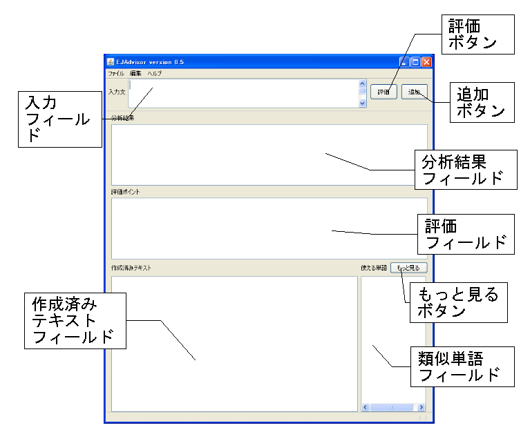
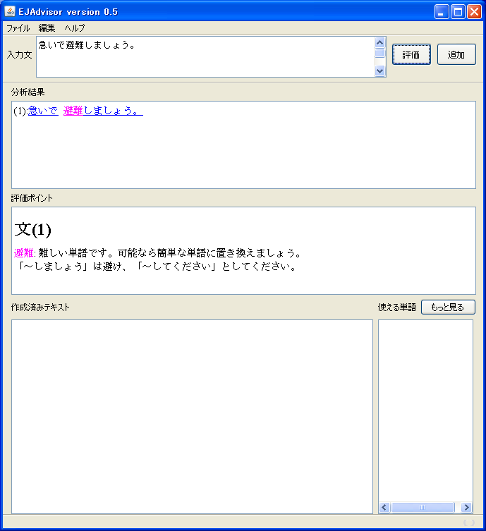
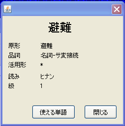

やんしすの画面を以下に示します。

作成 したい文を入力フィールドに入力し、評価ボタンを押します。すると、やんしすが入力 文を評価した結果が分析結果フィールドに表示され、それぞれの文に対する評価ポイントが評価フィールドに表示されます。

分析 結果フィールドでは、入力文ごとに評価結果が色で示されます。ピンクが｢やや難しい単語」（日本語能力検定１・２級レベル)、赤が「難しい単語｣(日本語能力検定語彙外）を示していま す。分析結果フィールドの中の単語をクリックすると、その単語の情報が表示されます。ここでは、単語の原形、品詞(IPAdicの分類による)、活用形、読み、日本語能力検定の級 が表示されます。

ここで開いたダイアログにある「使える単語｣ボタンをクリックすると、現在表示している単語に関連した「やさ しい単語｣が「類似単語フィールド｣に最大20個表示されます。表示は関連が高い順で、ここでの関連度は新聞記事からの統計に基づき計算しています（必ずしも適切であるとは限りません)。さらに多くの類似単語を表示したい 場合には、「もっと見る｣ボタンをクリックすることで最大200個の候補を表示します。
評価結果と類似単語の情報に基づき、入力フィールドの内容を手で修正します。修正と評価を繰り返し、作成者 が「これでよい｣と判断したら、追加ボタンを押します。すると、入力フィールドの内容が作成済みテキストフィールドの最後に追加され、その他のフィールド はクリアされます。作成済みテキストフィールドの内容は、[ファイル]メニューの[名前をつけて保存]で保存することができます。